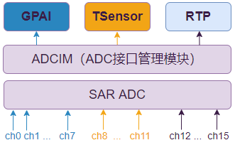

RTP 使用指南
2 Dec 2024
Read time: 1 minute(s)
| 术语 | 定义 | 注释说明 |
|---|---|---|
| ADC | Analog Digital Converter | 模拟数字转换器 |
| ADCIM | ADC Interface Management | ADC 接口管理模块 |
| RTP | Resistance Touch Panel | 电阻触摸屏 |
模块架构
RTP 需要依赖 ADCIM 模块（统一管理硬件通路和处理信号校准），其关系如图：

对于一次 RTP 的点击动作，会有 4 个相关的采样点：X+、X-、Y+、Y-（详见下文）， 这些采样点的选择和控制方式可以有不同的组合，分为两大类采样模式：
-
手动模式
手动去配置硬件 4 个采样点的电路信号，来组合得到 XN、YN、ZA、ZB 等采样数据。
- 自动模式自动模式意味着硬件自动配置电路，直接输出 XN、YN、ZA、ZB 等采样结果。 在自动模式中，根据采样数据是否连续进行又分为：
-
Period sample：周期采样，硬件会按照配置的周期自动采集和上报数据
-
Single sample：为避免和“单个采样点”混淆，称作 非周期采样，由软件触发完成一次采样
-
模块特性
-
支持 4 线 RTP，即 X+、X-、Y+、Y-
-
支持压力感应
-
支持最多 2 点触摸
-
支持采样滤波，滤波参数可配置
-
支持触摸检测中断
-
FIFO 深度 16